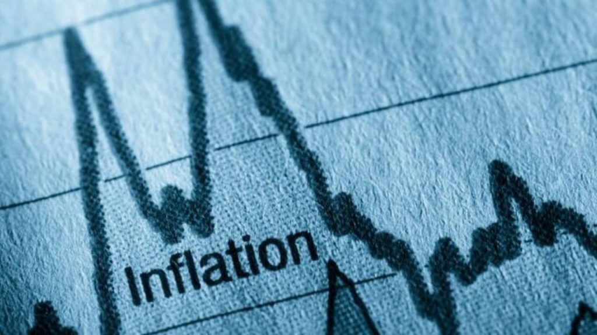
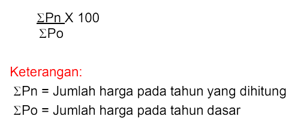

Inflasi dan Indeks Harga
Sumber : Ajaib
{kind=link}
- Inflasi adalah sebuah keadaan yang terjadi ketika nilai mata uang menurun, dan harga barang-barang menjadi naik. Inflasi adalah kenaikan harga barang dan jasa secara umum dan terus menerus dalam jangka waktu tertentu.
- Jika nilai mata uang naik dan harga barang menurun, kondisi ini disebut deflasi.
- Dari dalam negeri
- Dari luar negeri
- Inflasi tertutup = Hanya sebagian barang yang mengalami kenaikan harga
- Inflasi terbuka = Semua barang mengalami kenaikan harga
- Inflasi tak terkendali = Semua barang mengalami kenaikan harga dalam jumlah yang besar dan dalam kurun waktu yang lama/terus menerus
- Inflasi ringan = Inflasinya < 10%
- Inflasi sedang = Inflasinya 10% - 30%
- Inflasi berat = Inflasinya 30% - 100%
- Inflasi tak terkendali = Inflasinya > 100%
- Permintaan yang lebih tinggi daripada persediaan
- Kenaikan harga bahan baku dan biaya produksi
- Tekanan permintaan dan dorongan ongkos
- Tuntutan kenaikan upah
- Kekacauan politik dan ekonomi
- Peredaran uang yang tidak terkendali
- Politik diskonto = Pemerintah menaikkan atau menurunkan suku bunga bank
- Politik pasar terbuka = Pemerintah membeli atau menjual surat-surat berharga
- Pemberian kredit secara selektif = Melakukan seleksi terhadap pemberian kredit dengan ketat
- Politik persediaan kas = Pemerintah menaikkan atau menurunkan cadangan kas di bank
- Penaikkan produksi
- Kebijakan upah
- Pengawasan harga
- Melakukan pengawasan terhadap pengeluaran negara (APBN)
- Menaikkan tarif/pajak
- Indeks Harga Tidak Tertimbang : 
- Indeks Harga Tertimbang - Metode Laspeyres :
Qo adalah kuantitas pada tahun dasar/tahun sebelumnya - Indeks Harga Tertimbang - Metode Paasche :
Qn adalah kuantitas pada tahun yang dihitung
Apa Itu Inflasi?
Inflasi Berdasarkan Asal Timbulnya
Inflasi Berdasarkan Cakupannya
Inflasi Berdasarkan Tingkat Keparahannya
Faktor Penyebab Inflasi
Kebijakan Pemerintah Untuk Mengatasi Inflasi
Kebijakan Moneter
Kebijakan Non-Moneter
Kebijakan Fiskal
Metode Penghitungan Indeks Harga
Tronic!